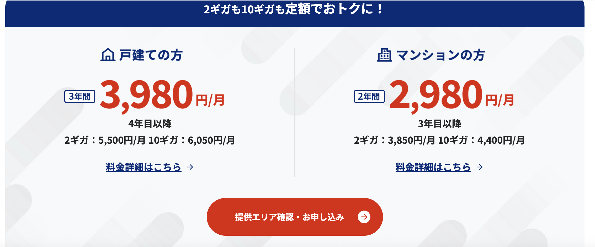

日本上网指南（不完全）
日本网络运营商概览：主干网、宽带与移动网络
不同于中国三大网络运营商垄断的局面，日本有着各种各样的本土运营商，以及国际互联网厂商提供的多样化服务。
本文将从 主干网运营商、宽带运营商、移动运营商 三个方面进行简单梳理。
一、日本主干网运营商
NTT（AS2914）
整个亚洲当之无愧的一哥，日本最大的主干网络运营商。
基于其自有主干网络，提供数据中心接入、家庭宽带以及移动互联网业务（docomo）。
KDDI（AS2516）
日本主要主干网运营商之一，业务覆盖范围与 NTT 类似，
同时运营移动互联网品牌 au。
SoftBank（AS17676）
软银旗下的网络运营商，同样拥有自己的主干网络，并涉足移动互联网业务。
以上三家运营商，在东京都厅展望台都可以看到对应的大楼。
Internet Initiative Japan（IIJ，AS2497）
日本顶级骨干网运营商之一，但在普通民众中的存在感不强。
主要业务面向 企业与数据中心，
似乎并未直接提供家庭宽带或移动互联网服务。
ARTERIA Networks（AS2519）
较为老牌的运营商之一，
Ucom 光 似乎是其旗下的宽带品牌。
日本的互联网交换中心（IX）
日本拥有多个重要的 IX，例如：
- JPIX
- BBIX
- JPNAP
日本几乎所有主要机房中，也能看到国际大型网络运营商的接入，例如 Tata、Lumen 等，这里不再展开。
二、宽带运营商
绝大部分宽带运营商属于 二级运营商，
直接租用 NTT 等主干网进行传输。
由于运营商数量众多，这里仅列举一些较为常见的。
NURO 光
索尼旗下 So-net 的宽带品牌。
可提供高达 10Gbps 的接入速率，且价格相当亲民。
例如：
10G 带宽仅需 4,400 日元 / 月。
在日本主要大城市基本都有覆盖，是否可办理取决于公寓是否支持。
个人认为是办理宽带的首选。

测试 IP：202.213.193.49（非终端 IP）
接入为 Sony 系自建光纤，骨干及对等可能与 NTT / KDDI 等互联。
NTT 光 / docomo 光 / ahamo 光
均使用 NTT 的线路。
测试 IP：61.200.80.90（非终端 IP）
au 光
KDDI 旗下宽带品牌。
大部分流量应走自有线路，原则上不依赖 NTT。
SoftBank 光
软银旗下宽带品牌。
实测打《王者荣耀》几乎不卡，延迟表现非常好。
测试 IP：219.188.225.22
J:COM
在老房子中比较常见，
有些公寓甚至是 免费附带 的宽带服务。
eo 光
在大阪地区较为常见，
个人使用不多。
コミュファ光
在名古屋地区遇到过，
不太清楚具体归属品牌。
Ucom 光
不太确定具体属于哪家运营商。
三、移动运营商
docomo
NTT 旗下的移动运营商，一哥地位稳固，
几乎 任何地方都有信号。
SoftBank
体感上与 docomo 差异不大，
即使在山里通常也能正常使用。
au
与前两家差距不明显，
大多数使用场景下体验接近。
乐天（Rakuten Mobile）
不到 3000 日元不限流量，性价比极高。
但信号相对较弱，即使在城市中，某些角落也可能信号较差。
如果长期生活在东京，个人感觉仍然是 非常值得考虑 的选择。
其他虚拟运营商（MVNO）
例如：
- CMlink
- IIJmio
- mineo
这类运营商数量很多，
基本都租用 docomo 等大运营商的基站。
因此在 信号与速度 上，可以直接参考所依附的主运营商。
四、个人选择建议
对我来说，如果去日本：
- 宽带首选：NURO 光
- 移动运营商：大概率仍然选择 docomo